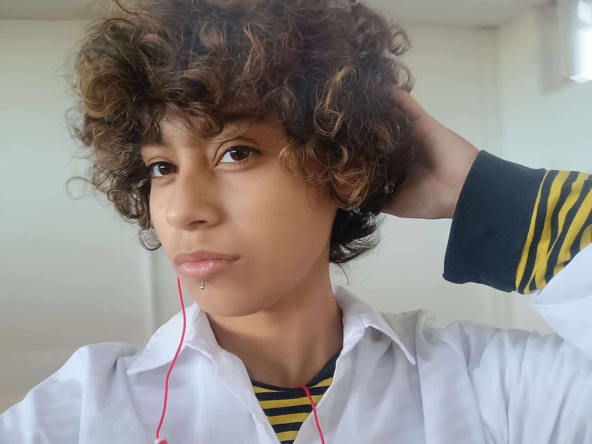

Solo tengo esta imagen...
Sinceramente mis amigos han sido un lado muy importante en mi vida, gracias a ellos
me he dado cuenta de todos los errores que he cometido, y sigo cometiendo.
Tambien, muchos de ellos han sio muy importantes en mi vida, una de ellas seria Angi y Melani.
Tengo mas amigos, virtuales y vida real, pero no vale la pena decir sus nombres cuando no se conocen,
eso si, una muy importante persona en una amiga actual llamada Sophia, ella ha sido muy buena conmigo,
me ha ayudado demasiado, en estos momento no estoy muy feliz pero esa amiga me ayuda mucho.
Si se nota, no he hablado mas de amigas, y es que tengo muy pocos amigos hombres, tengo conocidos como
el Nava y el Kevin, pero bueno, son amigos lejanos... pero cercanos cercanos, no tengo, solo amigas. No es que me siente mal
hasta me hace sentir mas comodo no hace falta explicar el porque.
Puedo hacer muchos mas comentarios, pero prefiero quedarme aquí, tal vez en algun futuro pongas mas informacion.